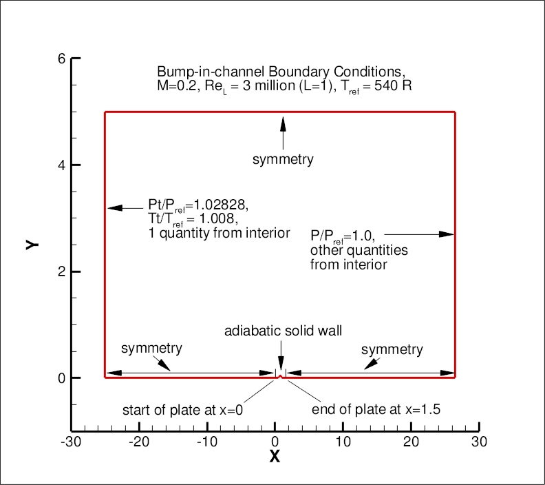
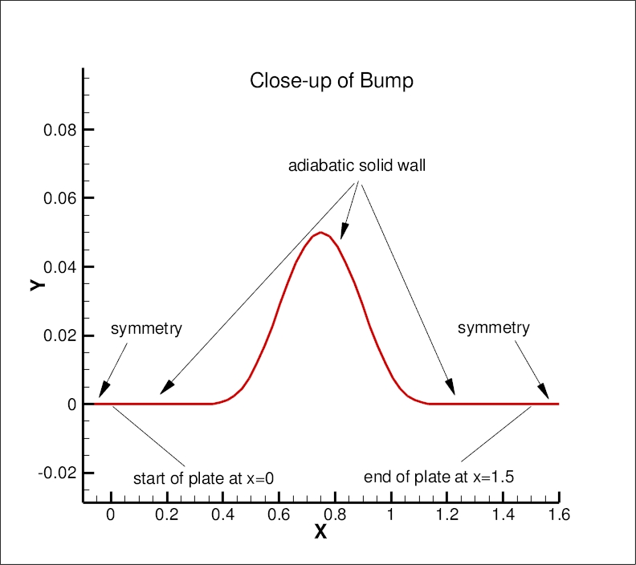

Public Access (formerly Langley Research Center)Turbulence Modeling Resource |
Return to: Turbulence Modeling Resource Home Page
VERIF/2DB: 2D Bump-in-channel Verification Case - Intro Page
The purpose here is to provide a large sequence of nested grids
of the same family,
along with results from existing CFD codes that employ specific forms of particular turbulence
models, in order to help programmers verify their implementations of these same models.
On a given grid, there may be differences between the results from different codes, but presumably
as the grid is refined the results should approach the same answer (if the flow conditions and
boundary conditions are the same).
With verification, the purpose is not to establish the "goodness" of a model compared to experiment,
but rather to establish that a model has been implemented correctly, as intended according to the
equations and boundary conditions. (It is through validation that a model's "goodness" is
established.) The purpose here is primarily verification.
The bump-in-channel case is different from the simpler
flat plate verification case
because it involves
wall curvature and, as a result, pressure gradients. It was run at
M = 0.2, at a Reynolds number of Re = 3 million based on
length "1" of the grid.
The body reference length is 1.5 units.
This lower wall is a
viscous-wall bump extending from x=0 to 1.5 (the actual bump itself - i.e., non-zero y - is from
x=0.3-1.2). The maximum bump height is 0.05. The definition of the bump is:
where "pi"=3.1415927... The upstream and downstream farfield extends 25 units from
the viscous-wall, with symmetry plane BCs imposed on the lower wall between the farfield and the solid
wall. The upper boundary is a distance of y=5.0 high.
It is taken to be a symmetry plane.
The following plots show the layout of this case,
along with the boundary conditions.
(Note that particular variations of the BCs at the inflow, top wall, and outflow
may also work and yield similar results for this problem.)
Another important note: although M=0.2 is low enough that the flow is "essentially" incompressible,
this is a compressible flow verification case. Therefore, if you run this case with an incompressible
code, your results may be close - but not quite the same - as the grid is refined.
This case was used as a verification test case for
High Lift Prediction Workshop 2 (HiLiftPW-2) and for
Drag Prediction Workshop 5 (DPW-5).


What to Expect:
(Other turbulence model results may be added in the future.)
Return to: Turbulence Modeling Resource Home Page
Recent significant updates: y=0.05*(sin(pi*x/0.9-(pi/3.)))**4 for 0.3≤x≤1.2
y=0 for 0≤x<0.3 and 1.2 <x ≤1.5
08/28/2020 - changed SST-V naming to SST-Vm
12/21/2018 - Added SA-QCR2013 verification case
07/13/2018 - Added SA-QCR2000 verification case
06/22/2018 - Added SA-RC-QCR2000 verification case
03/12/2018 - added BSL page
07/14/2016 - added SA-RC page
08/20/2014 - added SSG/LRR-RSM-w2012 page
03/18/2014 - added SST-2003 page
09/18/2013 - added Wilcox2006 page
Page Curators: Christopher Rumsey,
Ethan Vogel,
Clark Pederson
Last Updated: 03/24/2021